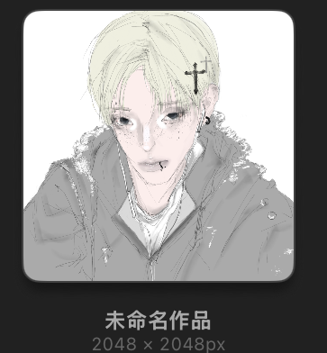
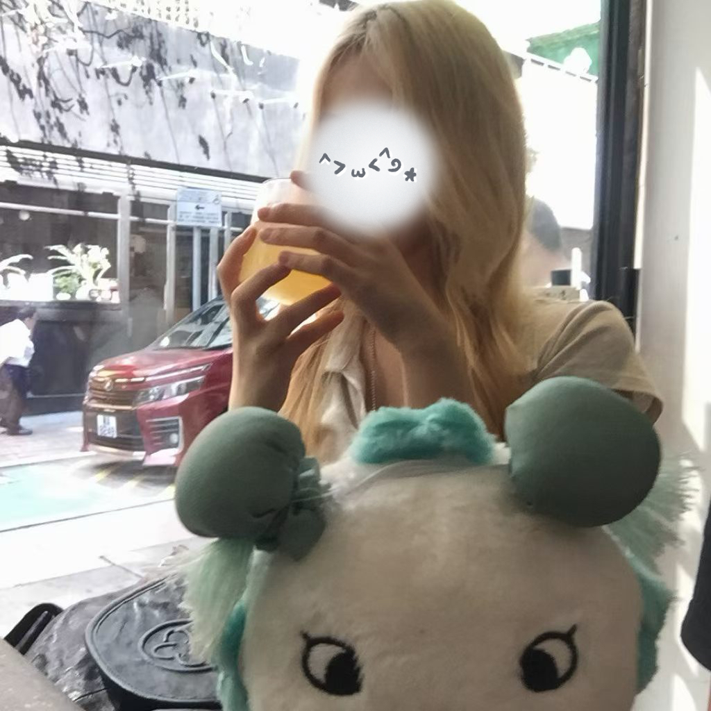
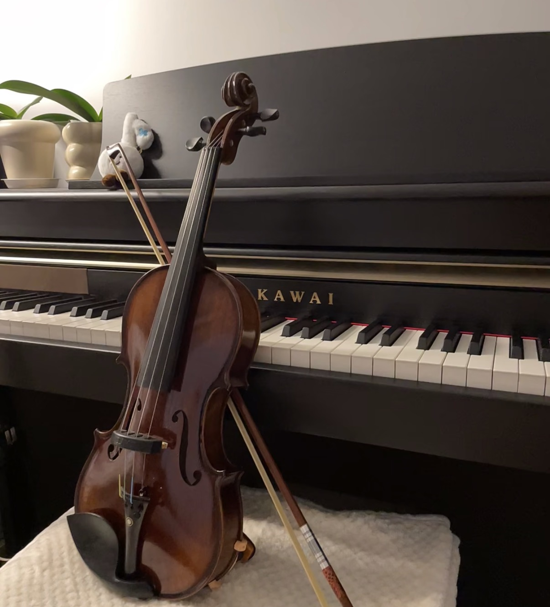
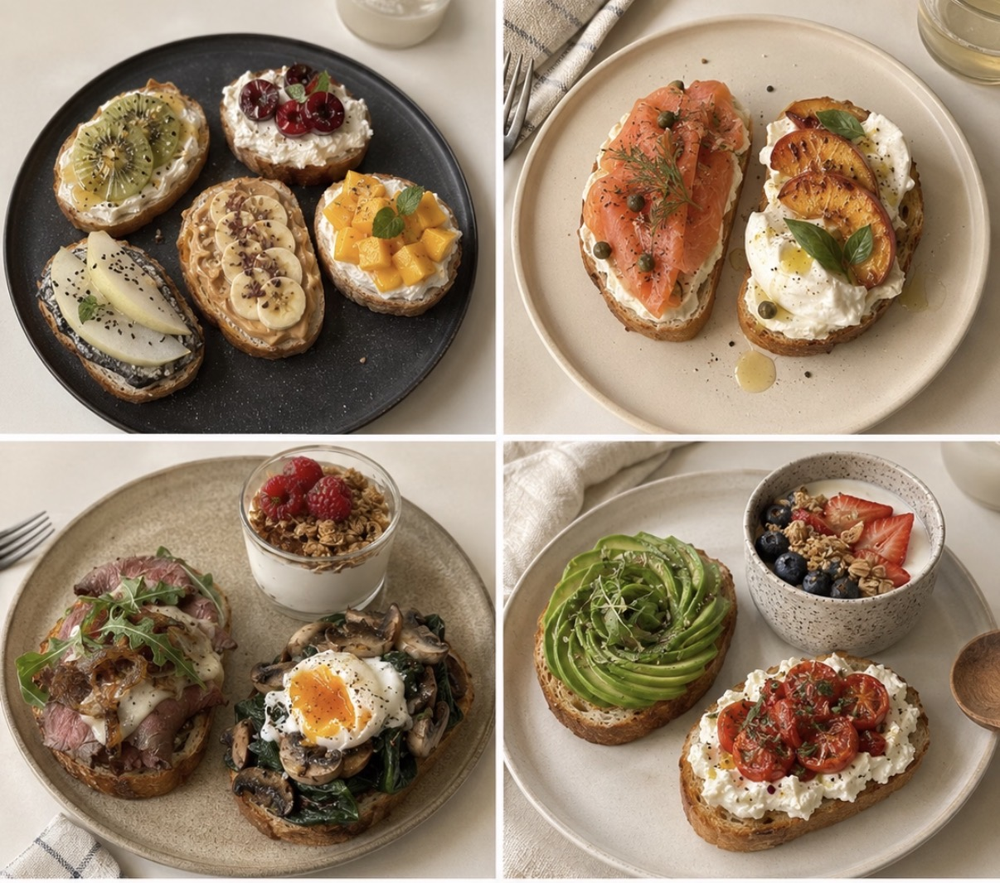

Drawing
I enjoy expressing ideas and creativity through art and visual details.
A second-year Data Science and Business Intelligence student at The Hang Seng University of Hong Kong, passionate about learning, exploring ideas, and growing through new experiences.
Get to know me ↓
I am a second-year student with a strong passion for learning and a spirit of inquiry. I have a deep interest in mathematics, and I am diligent, eager to learn, and always willing to ask questions.
I enjoy exploring new perspectives, taking on challenges, and learning from the people and experiences around me.
Creative hobbies and a curious mindset help me keep learning in different ways.

I enjoy expressing ideas and creativity through art and visual details.

Playing the violin helps me practise patience, focus, and consistency.

I enjoy trying things in the kitchen and discovering new flavours.
I love exploring logical ideas, asking questions, and solving problems.
Served as a member for one year and helped organise two events, building teamwork and communication skills.
Served as a floor ambassador and held two events to encourage participation and connection within the residential community.
I'm always eager to learn, exchange ideas, and explore new opportunities. I look forward to connecting with you.
Visit HSUHK